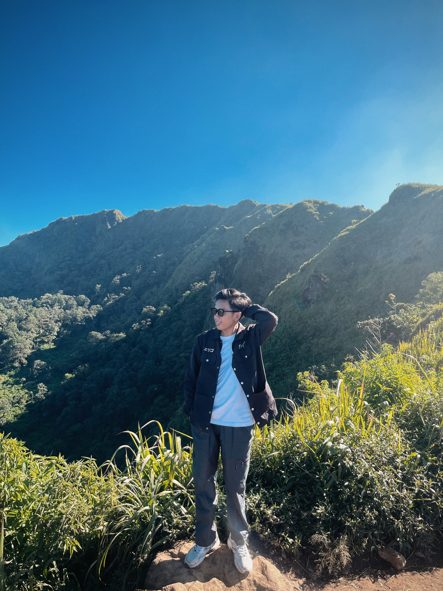

Proyek ini adalah pembuatan halaman tabel beberapa pengalaman saya pribadi menggunakan struktur elemen semantik HTML, tabel terstruktur, dan beberapa elemen input form.
Hi Feyy
Information Systems student at Dian Nuswantoro University with expertise in UI Design, Graphic Design, Social Media Design, and Video Editing.
|
 |
Saya merupakan mahasiswa aktif Universitas Dian Nuswantoro dengan Program Studi Sistem Informasi, Fakultas Ilmu Komputer. Saya memilih untuk mengambil program studi sistem informasi dikarenakan saya tertarik dengan perkembangan teknologi yang kian berkembang pesat. Selain itu saya juga tertatik dengan managemant-managemant suatu sistem didalam proses bisnis yang akan sangat membantu kebutuhan manusia. disisi lain, kreatif dan berorientasi dengan pengalaman dalam menghasilkan Desain Antarmuka dan Graphic Design senantiasa antusias mengeksplorasi antara teknologi dan estetika visual menjadi minat bakat saya sampai sekarang. Berfokus pada penciptaan pengalaman digital yang menarik, inovatif, dan fungsional, serta dapat berkolaborasi yang baik dalam bekerja bersama tim guna memastikan setiap proses desain berjalan selaras dengan tujuan yang telah ditetapkan. Dalam pembuatan halaman ini, saya menggunakan berbagai tag HTML untuk menyusun struktur dan menampilkan informasi. Saya juga mempelajari fungsi dari setiap tag agar dapat digunakan sesuai dengan kebutuhan halaman web. Pembuatan halaman ini menjadi salah satu latihan untuk memahami dasar-dasar pengembangan web. Dengan latihan ini, saya berharap dapat memahami HTML dengan lebih baik dan mampu menggunakannya dalam membuat halaman web yang lebih kompleks. |
| Tingkat Pendidikan | Nama Instansi / Sekolah | Tahun | Keterangan |
|---|---|---|---|
| Sekolah Menengah Pertama (SMP) | SMP 2 Jati Kudus | 2019-2022 | Pelajaran umum |
| Sekolah Menengah Atas (SMA) | SMK Raden Umar Said Kudus | 2022-2025 | Jurusan Desain Komunikasi Visual |
| Perguruan Tinggi (S1) | Universitas Dian Nuswantoro | 2025-2028 | Program Studi Sistem Informasi |
Proyek ini adalah pembuatan halaman tabel beberapa pengalaman saya pribadi menggunakan struktur elemen semantik HTML, tabel terstruktur, dan beberapa elemen input form.
| No | Kegiatan | Keterangan | Tahun | 1 | UKM (Unit Kegiatan Mahasiswa) DNCC | Saya berasal dari divisi website & panitia beberapa event | 2025-sekarang | 2 | Mengikuti lomba anforcom (UNDIP) | Membuat website bertema daur ulang sampah menjadi karya yang memiliki nilai jual | 2026 | 3 | UI/UX Design Competition (UNMA) | Membuat ui/ux website tentang mengangkat umkm semarang | 2026 | 4 | Karang Taruna | aktif kalo ada acara desa seperti event lomba 17an dan dokumentasi event lainya | 2023-sekarang |
|---|
Silakan isi form di bawah ini untuk mengirimkan pesan:
Isi form di samping untuk menghubungi saya.